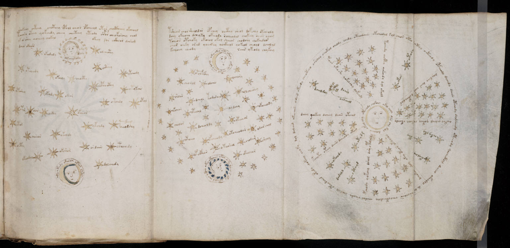

f68r3
1odchd otchdy cheoteeo oshchey chokol cheody chedy oteodaiin otchodal sol cheor oteo oteey oetchdy opcheody dchedy daiin oteeody da*cheedy oteeody qochecth*m dchreo okeodly do ls oschaiin cheockhedchy chodal cheody chol al oteodched okedy qokeey choky dol daleesd okinaiir 2dchey qokeey dcheey daiir otchal3toees ykeoshe qokolchey qokchdy4toees chcphy qokchdy dol okyld5dchykchy daiir chok ockhodar6qokol chdchol qoteey chetechy okchdy7dchokchr shhy okey oteos okolshy8pchody qokchy dshol dsy otgoldl9kchoty oteey daiin dcheeody oteey10doaro11oalcheol12dchol dal13otory14okos15okolchy16a cphy17chdy yky18darall19o cthyd20okchoda21otydm22otchody chokchy okol cheol dar cho keol dolaiin okeol oly
